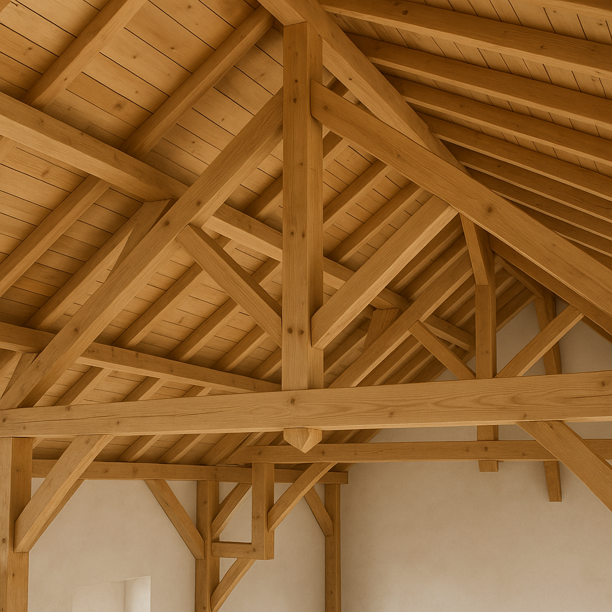
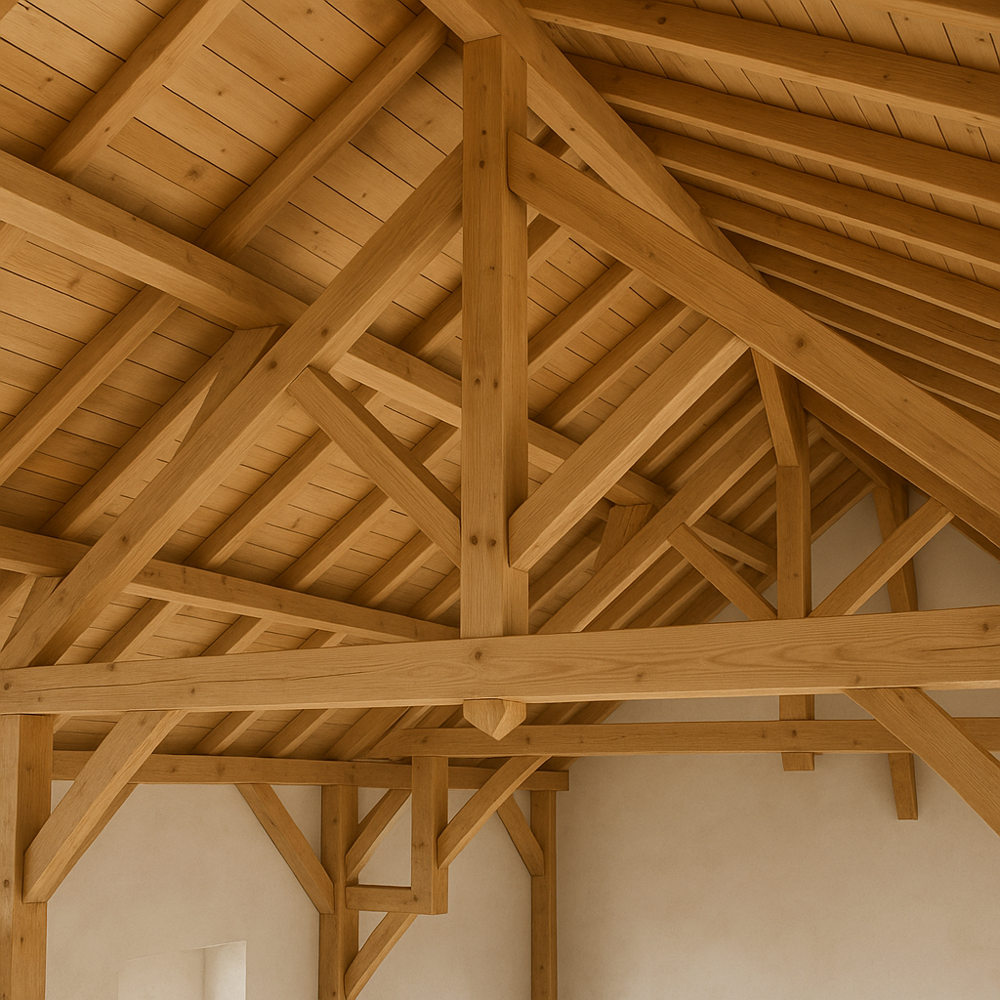

À propos
GBR Bois est une entreprise familiale fondée par deux frères, Simon et Mathieu Guberan, charpentiers passionnés et amoureux du bois. Basés en Suisse romande, ils exercent leur savoir-faire artisanal principalement au pied du Jura, où ils accompagnent vos projets de construction et de rénovation avec soin et précision. Depuis 2013, GBR Bois s’est forgée une solide réputation de qualité, de proximité et de respect des traditions locales.
Nos services
- Construction de charpentes traditionnelles
- Ossature bois et extensions
- Rénovation de toitures
- Terrasses, pergolas et aménagements extérieurs
- Conseils personnalisés et accompagnement de projet
Réalisations
Quelques exemples de nos projets :
- Maison familiale en ossature bois à Lausanne
- Charpente traditionnelle pour une ferme rénovée
- Terrasse en mélèze sur pilotis
 


Contact
Vous avez un projet ? Écrivez-nous ou appelez-nous !
Email : contact@gbrbois.ch
Téléphone : 077 521 24 15 (Simon) 077 424 55 58 (Mathieu)
Adresse : Les Envers 3, 1000 Lausanne